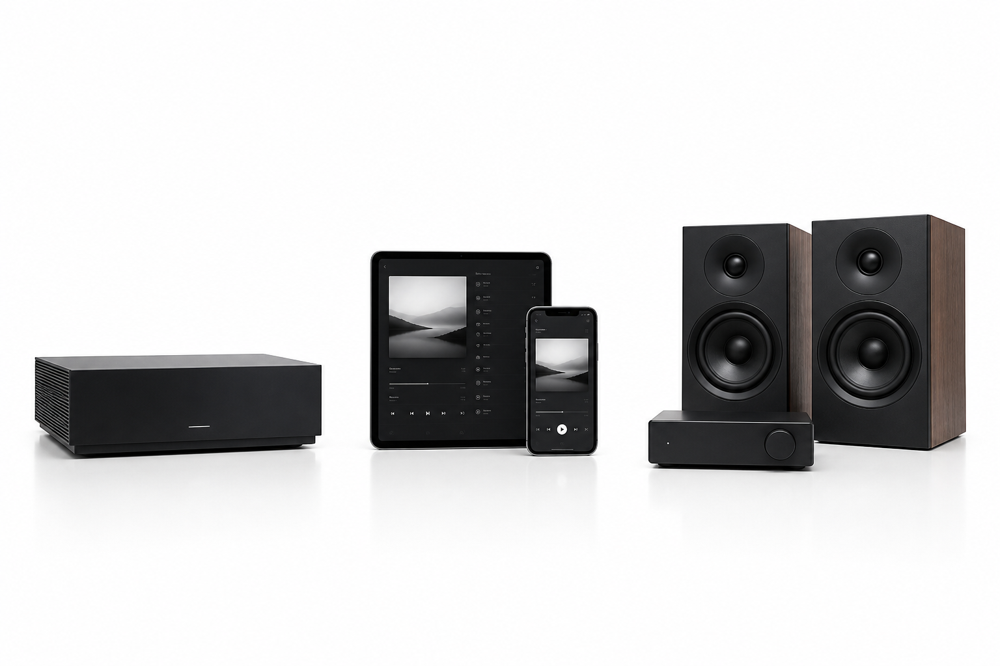

Core
Core는 시스템의 뇌입니다. 라이브러리, 메타데이터, DSP, 마스터 클럭을 맡습니다.
더 알아보기 ⟶강력하고 유연하지만, 시작은 쉽습니다.
Windows에 Control만 받으면 됩니다. 시스템은 나중에 키우면 됩니다.
Core는 시스템의 뇌입니다. 라이브러리, 메타데이터, DSP, 마스터 클럭을 맡습니다.
더 알아보기 ⟶Control은 소리가 없는 리모트입니다. 탐색하고, 큐를 짜고, 라운지를 엽니다.
더 알아보기 ⟶Output이 DAC로 소리를 냅니다. 방마다, 기기마다, 같은 타임라인으로.
더 알아보기 ⟶
Core가 허브이고, Control이 리모트이며, Output이 소리를 내는 엔드포인트입니다. Control은 TCP 7700으로 Core에 붙고, Output은 MATP 7701로 오디오와 클럭을 받습니다. 창은 Control 하나뿐입니다.
Core 알아보기 ⟶